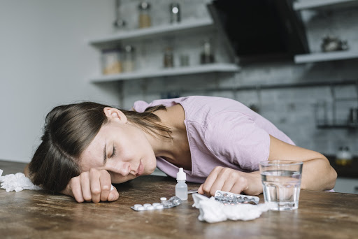
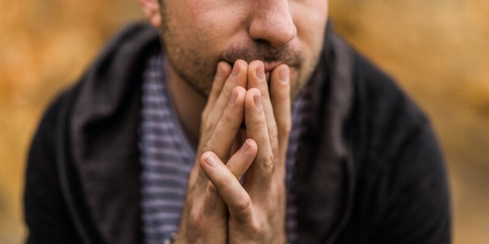

La Drogradicción
 La drogadicción es una enfermedad crónica que se caracteriza por la búsqueda y el consumo compulsivo o incontrolable de la droga a pesar de las consecuencias perjudiciales que acarrea y los cambios que causa en el cerebro, los cuales pueden ser duraderos. Estos cambios en el cerebro pueden generar las conductas dañinas que se observan en las personas que se drogan. La drogadicción es también una enfermedad con recaídas. La recaída ocurre cuando una persona vuelve a consumir drogas después de haber intentado dejarlas.
El camino hacia la drogadicción comienza con el acto voluntario de consumir drogas. Pero con el tiempo la capacidad de una persona para decidir no consumir drogas se debilita. La búsqueda y el consumo de la droga se vuelven compulsivos. Esto se debe mayormente a los efectos que tiene la exposición a la droga durante largo tiempo en la función cerebral. La adicción afecta las zonas del cerebro que participan en la motivación y la recompensa, el aprendizaje, la memoria y el control del comportamiento.
La adicción es una enfermedad que afecta tanto el cerebro como el comportamiento.
|
|
||
| Alcohol y tabaco | Marihuana | Cocaína |
| El consumo de estas sustancias está muy extendido en todos los grupos de población y a lo largo de todo el territorio nacional. Según el Observatorio de Drogas de Colombia, alrededor del 50% de los habitantes del país utilizan con cierta frecuencia estas sustancias. | Esta es la sustancia ilícita más consumida en Colombia. Del total de consumidores de drogas ilícitas en el último año, el 87% son consumidores de marihuana, confirma el Observatorio de Drogas de Colombia. Esta es la droga con más aceptación social pero lo que no se tiene en cuenta es que el riesgo de que la persona consumidora sufra un ataque al corazón durante la primera hora después de haber consumido esta droga. | Este tipo de estupefaciente es consumido en especial por los jóvenes de entre 18 a 24 años. Se trata de un estimulante del sistema nervioso central que genera gran adicción entre los jóvenes. Las formas más habituales del consumo de esta droga son la inhalación, la insuflación o la inyección en vena. Algunos de sus efectos son la pérdida de contacto con la realidad o la agresividad. |
¿Se puede tratar la drogadicción?
Sí, pero no es simple. Como la adicción es una enfermedad crónica, una persona no puede simplemente dejar de consumir drogas unos pocos días y curarse. La mayoría de los pacientes necesitan atención a largo plazo o repetida para poder dejar completamente las drogas y recuperar su vida. El tratamiento de la adicción puede ayudar a una persona a:- Dejar de consumir drogas.
- Mantenerse alejada de las drogas.
- Ser productiva en la familia, el trabajo y la sociedad.
Principios de un tratamiento eficaz
De acuerdo con la investigación científica realizada desde mediados de la década de 1970, todo programa eficaz de tratamiento debería tener como base los siguientes principios fundamentales:
- La adicción es una enfermedad compleja pero tratable que afecta el funcionamiento cerebral y el comportamiento.
- No existe un tratamiento único que sirva para todos.
- Las personas necesitan tener acceso rápido al tratamiento.
- El tratamiento eficaz abarca todas las necesidades del paciente, no solo el consumo de drogas.
- Continuar con el tratamiento durante todo el tiempo que sea necesario es un factor clave.
- La orientación psicológica y otras terapias conductuales son las formas más comunes de tratamiento.
- Los medicamentos son a menudo una parte importante del tratamiento, especialmente cuando se combinan con terapias conductuales.
- Los planes de tratamiento se deben evaluar con frecuencia y se deben modificar como sea necesario para adaptarlos a las necesidades cambiantes del paciente.
- El tratamiento debe abordar también otros posibles trastornos mentales.
- La desintoxicación con ayuda clínica es solo la primera etapa del tratamiento.
- No es necesario que el tratamiento sea voluntario para que sea eficaz.
- El consumo de drogas durante el tratamiento se debe vigilar constantemente.
- En los programas de tratamiento se hacen pruebas de VIH/sida, hepatitis B y C, tuberculosis y otras enfermedades infecciosas y los pacientes aprenden las medidas que pueden tomar para reducir el riesgo de contraer esas enfermedades.
¿Cuáles son los tratamientos para la drogadicción?
Son varias las opciones de tratamiento para la drogadicción que han dado buenos resultados. Entre ellas se cuentan:
- Orientación conductual
- Medicación
- Aplicaciones y dispositivos médicos que se usan para tratar los síntomas de abstinencia o instruir al paciente sobre el desarrollo de nuevas aptitudes
- Evaluación y tratamiento de problemas concurrentes de salud mental, como la depresión y la ansiedad
- Seguimiento a largo plazo para evitar la recaída
Contar con una gama de servicios asistenciales en un programa personalizado de tratamiento y tener opciones para el seguimiento pueden ser cruciales para el éxito del programa. El tratamiento debe incluir servicios médicos y de salud mental como sea necesario.
El seguimiento puede incluir sistemas de apoyo para la rehabilitación basados en la comunidad o en la familia.
¿Cómo se usan los medicamentos en el tratamiento de la drogadicción?
Los medicamentos se pueden utilizar para controlar los síntomas de abstinencia, evitar la recaída y tratar otros trastornos concurrentes.
Abstinencia. Los medicamentos ayudan a suprimir los síntomas de abstinencia durante la desintoxicación. La desintoxicación no es por sí misma "tratamiento", es solo el primer paso del proceso. Los pacientes que no reciben ningún tratamiento después de la desintoxicación por lo general vuelven a consumir drogas. Un estudio de instituciones dedicadas al tratamiento de la adicción reveló que en casi el 80% de las desintoxicaciones se utilizaron medicamentos (SAMHSA, 2014). También se están empleando dispositivos para aliviar los síntomas de abstinencia. En noviembre del 2017, la Administración de Drogas y Alimentos de Estados Unidos (U.S. Food and Drug Administration, FDA) agregó una nueva indicación para un dispositivo de estimulación electrónica, el NSS-2 Bridge, para su uso como elemento de ayuda para atenuar los síntomas de abstinencia de los opioides. Este dispositivo se coloca detrás de la oreja y envía pulsos eléctricos para estimular ciertos nervios cerebrales.
 Prevención de la recaída. Los pacientes pueden tomar medicamentos para ayudar a reestablecer la función normal del cerebro y reducir los
deseos intensos de consumir la droga. Existen medicamentos para tratar la adicción a los opioides (heroína, analgésicos recetados), al tabaco (nicotina) y al alcohol. Los científicos están desarrollando otros medicamentos para tratar la adicción
a los estimulantes (cocaína, metanfetamina) y al cannabis (marihuana). Quienes consumen más de una droga—algo muy común—necesitan tratamiento para todas las sustancias que consumen.
Prevención de la recaída. Los pacientes pueden tomar medicamentos para ayudar a reestablecer la función normal del cerebro y reducir los
deseos intensos de consumir la droga. Existen medicamentos para tratar la adicción a los opioides (heroína, analgésicos recetados), al tabaco (nicotina) y al alcohol. Los científicos están desarrollando otros medicamentos para tratar la adicción
a los estimulantes (cocaína, metanfetamina) y al cannabis (marihuana). Quienes consumen más de una droga—algo muy común—necesitan tratamiento para todas las sustancias que consumen.
- Opioides: Para tratar la adicción a los opioides se usan la metadona (Dolophine®, Methadose®), la buprenorfina (Suboxone®, Subutex®, Probuphine®, Sublocade™) y la naltrexona (Vivitrol®). La metadona y la buprenorfina actúan en los mismos puntos del cerebro que la heroína y la morfina; eliminan los síntomas de abstinencia y reducen los deseos intensos de consumir la droga. La naltrexona bloquea los efectos de los opioides en los sitios receptores del cerebro y se debe usar solamente en pacientes que ya han completado la fase de desintoxicación. Todos los medicamentos ayudan a mitigar las conductas que llevan a buscar la droga y a cometer delitos, y hacen que los pacientes sean más receptivos a las terapias conductuales. Un estudio del NIDA reveló que una vez comenzado el tratamiento, la combinación de buprenorfina y naloxona sumada a una formulación de naltrexona de liberación prolongada son similarmente eficaces para tratar la adicción a los opioides. Dado que es necesario completar la desintoxicación para realizar el tratamiento con naloxona, comenzar el tratamiento con consumidores activos fue difícil, pero una vez completada la desintoxicación ambos medicamentos demostraron ser similarmente eficaces.
- Tabaco: Las terapias de reemplazo de nicotina abarcan varias formas, entre ellas parches, aerosoles, goma de mascar y pastillas. Estos productos son de venta libre. La FDA ha aprobado dos medicamentos recetados para tratar la adicción a la nicotina: el bupropión (Zyban®) y la vareniclina (Chantix®). Estos medicamentos actúan de manera diferente en el cerebro, pero ambos ayudan a evitar las recaídas en las personas que están tratando de dejar el tabaco. Los medicamentos son más eficaces cuando se combinan con terapias conductuales tales como la terapia individual y grupal y las líneas telefónicas de ayuda para dejar el tabaco.
-
Alcohol: La FDA aprobó tres medicamentos para el tratamiento del alcoholismo, y un cuarto (el topiramato) parece dar buenos resultados en los ensayos clínicos (estudios a gran escala con seres humanos). Los tres
medicamentos aprobados son los siguientes:
- Naltrexona: bloquea los receptores opioides que participan en los efectos de recompensa generados por el consumo de alcohol y en el deseo intenso de la bebida. Reduce las recaídas al consumo excesivo y es sumamente eficaz en algunos pacientes. Las diferencias genéticas podrían tener un efecto en cuán bien actúa la droga en ciertos pacientes.
- Acamprosato (Campral®): puede reducir los síntomas de abstinencia duradera, como el insomnio, la ansiedad, el desasosiego y la disforia (un estado opuesto a la euforia en el que la persona no se siente bien ni feliz). Es posible que sea más eficaz en pacientes con adicción grave.
- Disulfiram (Antabuse®): interfiere con la descomposición del alcohol. Si el paciente bebe alcohol, se acumula acetaldehído en el organismo, lo que produce reacciones desagradables que incluyen sofocos (enrojecimiento y calor en la cara), náuseas y latido irregular del corazón. La observancia (tomar la droga en la forma indicada) puede ser un problema, pero el medicamento puede ayudar a los pacientes que están muy motivados para dejar de beber.
- Trastornos concurrentes: Hay otros medicamentos disponibles para tratar posibles trastornos de salud mental, como la depresión o la ansiedad, que podrían estar contribuyendo a la adicción de la persona.
¿Cómo se emplean las terapias conductuales en el tratamiento de la drogadicción?
Las terapias conductuales ayudan a los pacientes a:
- modificar su actitud y su comportamiento con respecto al consumo de drogas
- aumentar sus aptitudes para llevar una vida sana
- continuar con otras formas de tratamiento, como por ejemplo los medicamentos
Los pacientes pueden recibir tratamiento en muchos sitios diferentes con enfoques variados.
El tratamiento conductual ambulatorio incluye una variedad de programas para pacientes que visitan un consejero especialista en salud conductual en forma regular. La mayoría de los programas incluyen orientación individual o grupal sobre las drogas, o ambas. Estos programas generalmente brindan formas de terapia conductual tales como:
- Terapia cognitivo conductual, que ayuda a los pacientes a reconocer, evitar y afrontar las situaciones en las que es más probable que consuman drogas.
- Terapia familiar multidimensional, desarrollada para adolescentes con problemas de abuso de drogas y sus familias. Esta técnica abarca una variedad de influencias sobre las pautas de consumo de drogas del paciente y su propósito es mejorar el funcionamiento general de la familia.
- Entrevistas motivacionales, que aprovechan al máximo la disposición del paciente para modificar su comportamiento e iniciar el tratamiento.
- Incentivos motivacionales (control de contingencias), que utilizan el refuerzo positivo para alentar la abstinencia de las drogas.
A veces el tratamiento es intensivo al comienzo, cuando el paciente asiste a varias sesiones ambulatorias cada semana. Luego de finalizar el tratamiento intensivo, pasa al tratamiento ambulatorio regular—menos horas por semana y reuniones menos frecuentes- para ayudarlo a mantener la rehabilitación. En septiembre del 2017 la FDA autorizó la comercialización de la primera aplicación móvil, reSET®, para ayudar en el tratamiento de los trastornos por consumo de drogas. Esta aplicación está pensada para usarse en combinación con el tratamiento ambulatorio de los trastornos por consumo de alcohol, cocaína, marihuana y estimulantes. En diciembre de 2018, la FDA (Administración de Alimentos y Medicamentos) aprobó una aplicación médica móvil llamada reSET® para ayudar en el tratamiento de los trastornos por consumo de opioides. Esta aplicación es una terapia cognitivo-conductual que se obtiene con receta médica y debe utilizarse conjuntamente con un tratamiento que incluya buprenorfina y aplique el control de contingencias. Encontrará más información sobre reSET® en este comunicado de prensa de la FDA.
Tratamiento con internación o residencial: también puede ser muy eficaz, particularmente para quienes tienen problemas más graves (incluido algún trastorno concurrente). Los establecimientos residenciales habilitados para brindar tratamiento ofrecen atención estructurada e intensiva las 24 horas, que incluye alojamiento protegido y atención médica. Estos establecimientos residenciales de tratamiento pueden aplicar una variedad de métodos terapéuticos y generalmente están orientados a ayudar al paciente a adoptar un estilo de vida sin drogas ni actividad delictiva después del tratamiento. Estos son ejemplos de algunos tipos de tratamiento residencial:
- Comunidades terapéuticas: son programas sumamente estructurados en los que los pacientes generalmente permanecen en una residencia por un período de seis a doce meses. Toda la comunidad, incluido el personal que brinda tratamiento y quienes están en rehabilitación, actúan como agentes clave de cambio e influyen en la actitud, el entendimiento y la conducta del paciente con respecto al consumo de drogas. Infórmese más sobre las comunidades terapéuticas en el Informe de investigación sobre comunidades terapéuticas (en inglés).
- Tratamiento residencial a corto plazo: se enfoca típicamente en la desintoxicación y brinda orientación intensiva inicial y preparación para el tratamiento en un entorno comunitario.
- Alojamientos de rehabilitación: brindan a los pacientes alojamiento supervisado de corta duración y a menudo ofrecen otros tipos de tratamientos con internación o residenciales. Un alojamiento de rehabilitación puede ayudar a la persona a realizar la transición hacia una vida independiente ayudándola, por ejemplo, a aprender a administrar sus finanzas o buscar empleo y conectarla con servicios de apoyo en la comunidad.
Las dificultades de la reinserción
El abuso de las drogas modifica el funcionamiento cerebral, y son muchas las cosas que pueden desencadenar un deseo intenso de consumir drogas en el cerebro. Es crítico que quienes están en tratamiento, particularmente las personas que están internadas en un centro de rehabilitación o están en la cárcel, aprendan a reconocer, evitar y manejar los factores desencadenantes con los que probablemente se enfrentarán después del tratamiento.
¿El tratamiento de las personas encarceladas es diferente?
La investigación científica desde mediados de la década de 1970 ha demostrado que el tratamiento del consumo de drogas puede ayudar a muchos delincuentes a modificar sus actitudes, creencias y conductas relacionadas con el abuso de drogas, evitar la recaída y alejarse efectivamente de la vida delictiva y el abuso de las drogas. Muchos de los principios del tratamiento de la drogadicción son similares para las personas que están en la cárcel y para quienes no lo están. Sin embargo, una gran cantidad de detenidos no tiene acceso al tipo de servicios que necesita. Un tratamiento de baja calidad o que no se adapte bien a las necesidades de la persona puede no ser eficaz para reducir el consumo de drogas y la conducta delictiva.
Además de los principios generales de tratamiento, algunas consideraciones específicas para quienes están detenidos incluyen:
- El tratamiento debería incluir el desarrollo de aptitudes cognitivas específicas para ayudar al recluso a modificar las actitudes y creencias que llevan al abuso de drogas y al delito, tales como sentirse con derecho a que las cosas sean a su manera o no comprender las consecuencias de su conducta. Esto incluye aptitudes relacionadas con el pensamiento, la comprensión, el aprendizaje y la memoria.
- La planificación del tratamiento debería incluir servicios personalizados dentro de la institución correccional y también la transición al tratamiento comunitario una vez que la persona sale de la cárcel.
- Es importante que exista coordinación constante entre quienes brindan el tratamiento y los tribunales o los agentes que supervisan la libertad condicional o vigilada para abordar las complejas necesidades de quienes han salido de la cárcel y vuelven a insertarse en la sociedad.
¿Cuántas personas reciben tratamiento para la drogadicción?
Según la Encuesta Nacional sobre el Consumo de Drogas y la Salud de SAMHSA, 22.5 millones de personas (el 8.5% de la población de Estados Unidos) de 12 años o más necesitaban tratamiento por un problema de consumo de drogas ilícitas* o alcohol en el 2014. Solo 4.2 millones (el 18.5% de quienes necesitaban tratamiento) recibieron algún tipo de tratamiento para el consumo de drogas ese mismo año. De esas personas, alrededor de 2.6 millones recibieron tratamiento en programas de tratamiento especializados (CBHSQ, 2015).
*El término "ilícito" se refiere al consumo de drogas ilegales, incluida la marihuana de acuerdo con las leyes federales, y al abuso de medicamentos recetados.
Puntos para recordar
- La drogadicción se puede tratar, pero no es simple. El tratamiento de la adicción debe ayudar a que la persona:
- -Deje de consumir drogas.
- -Mantengase alejada de las drogas.
- -Sea productivo en la familia, el trabajo y la sociedad.
- Un tratamiento exitoso consta de varios pasos:
- *Desintoxicación
- *Orientación conductual
- *Medicación (para la adicción a los opioides, el tabaco o el alcohol)
- *Evaluación y tratamiento de problemas concurrentes de salud mental, como la depresión y la ansiedad
- *Seguimiento a largo plazo para evitar la recaída
- Hay medicamentos y dispositivos que se pueden utilizar para controlar los síntomas de abstinencia, evitar la recaída y tratar otros trastornos concurrentes.
- Las terapias conductuales ayudan a que los pacientes:
- -Modifiquen su actitud y comportamiento con relación al consumo de drogas
- -Aumenten sus aptitudes para llevar una vida sana
- -Continúen con otras formas de tratamiento, como por ejemplo los medicamentos
- Quienes se encuentran dentro del sistema de justicia penal podrían necesitar servicios terapéuticos adicionales para tratar eficazmente los trastornos por consumo de drogas. Sin embargo, muchos de los detenidos no tienen acceso al tipo de servicios que necesitan.